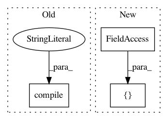

d3bdc5449964423387861c78edd9d890a81a5466,tests/layers/test_layers_recurrent.py,Layer_RNN_Test,setUpClass,#Any#,18
Before Change
bias_initializer=None,
)(cls.keras_net_in)
cls.keras_rnn_model = tf.keras.Model(inputs=cls.keras_net_in, outputs=cls.keras_net_rnn)
cls.keras_rnn_model.compile(optimizer="adam",
loss="categorical_crossentropy",
metrics=["accuracy"])
"""
// =============================== CNN+RNN encoder ===============================
After Change
cls.num_steps = 6
cls.data_x = np.random.random([cls.batch_size, cls.num_steps, cls.embedding_size]).astype(np.float32)
cls.data_y = np.zeros([cls.batch_size, 1]).astype(np.float32)
map1 = np.random.random([1, cls.num_steps])
map2 = np.random.random([cls.embedding_size, 1])
In pattern: SUPERPATTERN
Frequency: 3
Non-data size: 3
Instances
Project Name: tensorlayer/tensorlayer
Commit Name: d3bdc5449964423387861c78edd9d890a81a5466
Time: 2019-03-31
Author: jingqing.zhang15@imperial.ac.uk
File Name: tests/layers/test_layers_recurrent.py
Class Name: Layer_RNN_Test
Method Name: setUpClass
Project Name: keras-team/keras
Commit Name: 534f6b7975dcd334f6d68eef14598d75c79e7921
Time: 2016-08-28
Author: francois.chollet@gmail.com
File Name: tests/test_model_saving.py
Class Name:
Method Name: test_sequential_model_saving
Project Name: keras-team/keras
Commit Name: 82f9e2358c35c5bbff8714280174617ba29cf92b
Time: 2017-02-17
Author: francois.chollet@gmail.com
File Name: tests/test_loss_weighting.py
Class Name:
Method Name: